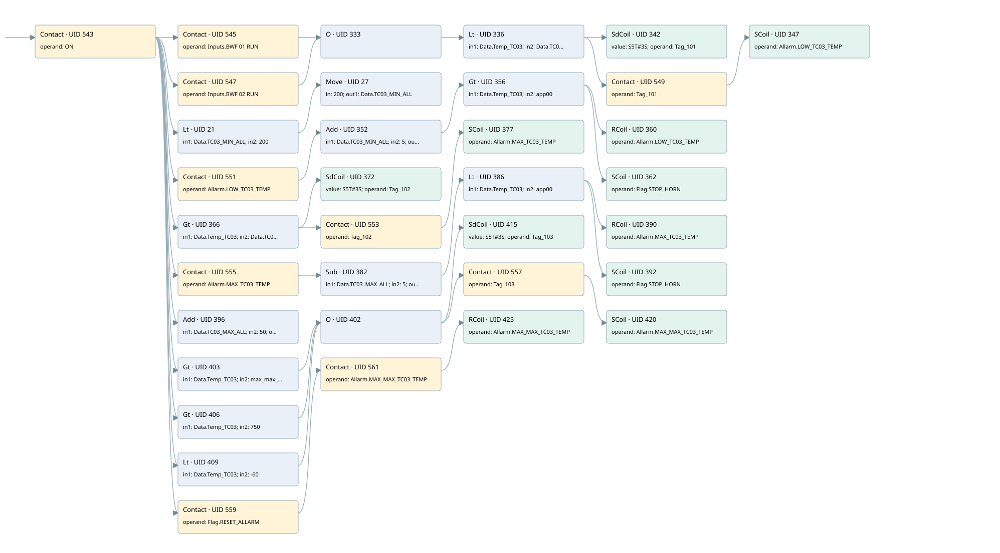

low tc03 temperature
allarms 3 · 검색 색인 순서 2 · 원본 내부 NID 추정 2
백업 PLF 원본의 3164619 바이트 위치에서 복원한 XML. 검색 문서 1980의 객체 키 16102200726b000000000000와 연결했다. 이름 해석 51/51개. 남은 RefId는 상수 또는 미해석 참조다.
연결 구조 다시 그리기
원본 Part/PCon/Wire를 이용한 연결도다. TIA 화면의 래더 배치 또는 실행 결과를 재현한 그림은 아니다. 핀 연결은 아래 표와 원본 XML을 기준으로 읽는다. 노드 위에 마우스를 두면 피연산자 이름을 볼 수 있다.

접점·코일·블록과 피연산자
| Part UID | Gate | Negated 핀 | 연결 피연산자 |
|---|---|---|---|
| 543 | Contact | operand = ON | |
| 545 | Contact | operand = Inputs.BWF 01 RUN | |
| 547 | Contact | operand = Inputs.BWF 02 RUN | |
| 333 | O | ||
| 336 | Lt | in1 = Data.Temp_TC03; in2 = Data.TC03_MIN_ALL | |
| 342 | SdCoil | value = S5T#3S; operand = Tag_101 | |
| 549 | Contact | operand = Tag_101 | |
| 347 | SCoil | operand = Allarm.LOW_TC03_TEMP | |
| 21 | Lt | in1 = Data.TC03_MIN_ALL; in2 = 200 | |
| 27 | Move | in = 200; out1 = Data.TC03_MIN_ALL | |
| 551 | Contact | operand = Allarm.LOW_TC03_TEMP | |
| 352 | Add | in1 = Data.TC03_MIN_ALL; in2 = 5; out = app00 | |
| 356 | Gt | in1 = Data.Temp_TC03; in2 = app00 | |
| 360 | RCoil | operand = Allarm.LOW_TC03_TEMP | |
| 362 | SCoil | operand = Flag.STOP_HORN | |
| 366 | Gt | in1 = Data.Temp_TC03; in2 = Data.TC03_MAX_ALL | |
| 372 | SdCoil | value = S5T#3S; operand = Tag_102 | |
| 553 | Contact | operand = Tag_102 | |
| 377 | SCoil | operand = Allarm.MAX_TC03_TEMP | |
| 555 | Contact | operand = Allarm.MAX_TC03_TEMP | |
| 382 | Sub | in1 = Data.TC03_MAX_ALL; in2 = 5; out = app00 | |
| 386 | Lt | in1 = Data.Temp_TC03; in2 = app00 | |
| 390 | RCoil | operand = Allarm.MAX_TC03_TEMP | |
| 392 | SCoil | operand = Flag.STOP_HORN | |
| 396 | Add | in1 = Data.TC03_MAX_ALL; in2 = 50; out = max_max_tc3 | |
| 403 | Gt | in1 = Data.Temp_TC03; in2 = max_max_tc3 | |
| 406 | Gt | in1 = Data.Temp_TC03; in2 = 750 | |
| 409 | Lt | in1 = Data.Temp_TC03; in2 = -60 | |
| 402 | O | ||
| 415 | SdCoil | value = S5T#3S; operand = Tag_103 | |
| 557 | Contact | operand = Tag_103 | |
| 420 | SCoil | operand = Allarm.MAX_MAX_TC03_TEMP | |
| 559 | Contact | operand = Flag.RESET_ALLARM | |
| 561 | Contact | operand = Allarm.MAX_MAX_TC03_TEMP | |
| 425 | RCoil | operand = Allarm.MAX_MAX_TC03_TEMP |
접점 경로를 펼친 조건식
Contact·O/A·비교기의 원본 연결을 읽기 쉽게 펼친 보조 해석이다. POWER는 전원 레일 시작을 뜻한다. 호출 블록·에지·타이머의 내부 동작과 다중 쓰기 순서는 이 표로 실행 검증하지 않았다. 미해석 핀과 RefId는 원문 연결표에서 확인한다.
| UID | 동작 | 대상 | 원본 접점 경로 | 내용 |
|---|---|---|---|---|
| 342 | SdCoil | Tag_101 | (((ON AND Inputs.BWF 01 RUN) OR (ON AND Inputs.BWF 02 RUN)) AND [Data.Temp_TC03 < Data.TC03_MIN_ALL]) | 시간 동작 SdCoil; 타이머 의미 추가 확인 / 시간 인자 S5T#3S |
| 347 | SCoil | Allarm.LOW_TC03_TEMP | ((((ON AND Inputs.BWF 01 RUN) OR (ON AND Inputs.BWF 02 RUN)) AND [Data.Temp_TC03 < Data.TC03_MIN_ALL]) AND Tag_101) | 조건 성립 시 Set |
| 27 | Move | Data.TC03_MIN_ALL | (ON AND [Data.TC03_MIN_ALL < 200]) | Move 입력 200 |
| 360 | RCoil | Allarm.LOW_TC03_TEMP | (Add UID 352.eno (블록 동작 확인) AND [Data.Temp_TC03 > app00]) | 조건 성립 시 Reset |
| 362 | SCoil | Flag.STOP_HORN | (Add UID 352.eno (블록 동작 확인) AND [Data.Temp_TC03 > app00]) | 조건 성립 시 Set |
| 372 | SdCoil | Tag_102 | (ON AND [Data.Temp_TC03 > Data.TC03_MAX_ALL]) | 시간 동작 SdCoil; 타이머 의미 추가 확인 / 시간 인자 S5T#3S |
| 377 | SCoil | Allarm.MAX_TC03_TEMP | ((ON AND [Data.Temp_TC03 > Data.TC03_MAX_ALL]) AND Tag_102) | 조건 성립 시 Set |
| 390 | RCoil | Allarm.MAX_TC03_TEMP | (Sub UID 382.eno (블록 동작 확인) AND [Data.Temp_TC03 < app00]) | 조건 성립 시 Reset |
| 392 | SCoil | Flag.STOP_HORN | (Sub UID 382.eno (블록 동작 확인) AND [Data.Temp_TC03 < app00]) | 조건 성립 시 Set |
| 415 | SdCoil | Tag_103 | ((ON AND [Data.Temp_TC03 > max_max_tc3]) OR (ON AND [Data.Temp_TC03 > 750]) OR (ON AND [Data.Temp_TC03 < -60])) | 시간 동작 SdCoil; 타이머 의미 추가 확인 / 시간 인자 S5T#3S |
| 420 | SCoil | Allarm.MAX_MAX_TC03_TEMP | (((ON AND [Data.Temp_TC03 > max_max_tc3]) OR (ON AND [Data.Temp_TC03 > 750]) OR (ON AND [Data.Temp_TC03 < -60])) AND Tag_103) | 조건 성립 시 Set |
| 425 | RCoil | Allarm.MAX_MAX_TC03_TEMP | ((ON AND Flag.RESET_ALLARM) AND Allarm.MAX_MAX_TC03_TEMP) | 조건 성립 시 Reset |
원본 배선 연결
| Wire UID | 동일 Wire 연결 끝점 |
|---|---|
| 563 | Powerrail {} ↔ Part 543.in |
| 473 | ORef 426 (ON) ↔ Part 543.operand |
| 544 | Part 543.out ↔ Part 545.in ↔ Part 547.in ↔ Part 21.pre ↔ Part 551.in ↔ Part 366.pre ↔ Part 555.in ↔ Part 396.en ↔ Part 403.pre ↔ Part 406.pre ↔ Part 409.pre ↔ Part 559.in |
| 474 | ORef 427 (Inputs.BWF 01 RUN) ↔ Part 545.operand |
| 546 | Part 545.out ↔ Part 333.in1 |
| 475 | ORef 428 (Inputs.BWF 02 RUN) ↔ Part 547.operand |
| 548 | Part 547.out ↔ Part 333.in2 |
| 476 | Part 333.out ↔ Part 336.pre |
| 477 | ORef 429 (Data.Temp_TC03) ↔ Part 336.in1 |
| 478 | ORef 430 (Data.TC03_MIN_ALL) ↔ Part 336.in2 |
| 479 | Part 336.out ↔ Part 342.in ↔ Part 549.in |
| 480 | ORef 431 (S5T#3S) ↔ Part 342.value |
| 481 | ORef 432 (Tag_101) ↔ Part 342.operand |
| 482 | ORef 433 (Tag_101) ↔ Part 549.operand |
| 550 | Part 549.out ↔ Part 347.in |
| 484 | ORef 434 (Allarm.LOW_TC03_TEMP) ↔ Part 347.operand |
| 22 | ORef 24 (Data.TC03_MIN_ALL) ↔ Part 21.in1 |
| 23 | ORef 25 (200) ↔ Part 21.in2 |
| 28 | Part 21.out ↔ Part 27.en |
| 29 | ORef 31 (200) ↔ Part 27.in |
| 30 | Part 27.out1 ↔ ORef 32 (Data.TC03_MIN_ALL) |
| 486 | ORef 435 (Allarm.LOW_TC03_TEMP) ↔ Part 551.operand |
| 552 | Part 551.out ↔ Part 352.en |
| 488 | ORef 436 (Data.TC03_MIN_ALL) ↔ Part 352.in1 |
| 489 | ORef 437 (5) ↔ Part 352.in2 |
| 491 | Part 352.eno ↔ Part 356.pre |
| 490 | Part 352.out ↔ ORef 438 (app00) |
| 492 | ORef 439 (Data.Temp_TC03) ↔ Part 356.in1 |
| 493 | ORef 440 (app00) ↔ Part 356.in2 |
| 494 | Part 356.out ↔ Part 360.in ↔ Part 362.in |
| 495 | ORef 441 (Allarm.LOW_TC03_TEMP) ↔ Part 360.operand |
| 496 | ORef 442 (Flag.STOP_HORN) ↔ Part 362.operand |
| 498 | ORef 443 (Data.Temp_TC03) ↔ Part 366.in1 |
| 499 | ORef 444 (Data.TC03_MAX_ALL) ↔ Part 366.in2 |
| 500 | Part 366.out ↔ Part 372.in ↔ Part 553.in |
| 501 | ORef 445 (S5T#3S) ↔ Part 372.value |
| 502 | ORef 446 (Tag_102) ↔ Part 372.operand |
| 503 | ORef 447 (Tag_102) ↔ Part 553.operand |
| 554 | Part 553.out ↔ Part 377.in |
| 505 | ORef 448 (Allarm.MAX_TC03_TEMP) ↔ Part 377.operand |
| 507 | ORef 449 (Allarm.MAX_TC03_TEMP) ↔ Part 555.operand |
| 556 | Part 555.out ↔ Part 382.en |
| 509 | ORef 450 (Data.TC03_MAX_ALL) ↔ Part 382.in1 |
| 510 | ORef 451 (5) ↔ Part 382.in2 |
| 512 | Part 382.eno ↔ Part 386.pre |
| 511 | Part 382.out ↔ ORef 452 (app00) |
| 513 | ORef 453 (Data.Temp_TC03) ↔ Part 386.in1 |
| 514 | ORef 454 (app00) ↔ Part 386.in2 |
| 515 | Part 386.out ↔ Part 390.in ↔ Part 392.in |
| 516 | ORef 455 (Allarm.MAX_TC03_TEMP) ↔ Part 390.operand |
| 517 | ORef 456 (Flag.STOP_HORN) ↔ Part 392.operand |
| 519 | ORef 457 (Data.TC03_MAX_ALL) ↔ Part 396.in1 |
| 520 | ORef 458 (50) ↔ Part 396.in2 |
| 521 | Part 396.out ↔ ORef 459 (max_max_tc3) |
| 522 | ORef 460 (Data.Temp_TC03) ↔ Part 403.in1 |
| 523 | ORef 461 (max_max_tc3) ↔ Part 403.in2 |
| 524 | Part 403.out ↔ Part 402.in1 |
| 525 | ORef 462 (Data.Temp_TC03) ↔ Part 406.in1 |
| 526 | ORef 463 (750) ↔ Part 406.in2 |
| 527 | Part 406.out ↔ Part 402.in2 |
| 528 | ORef 464 (Data.Temp_TC03) ↔ Part 409.in1 |
| 529 | ORef 465 (-60) ↔ Part 409.in2 |
| 530 | Part 409.out ↔ Part 402.in3 |
| 531 | Part 402.out ↔ Part 415.in ↔ Part 557.in |
| 532 | ORef 466 (S5T#3S) ↔ Part 415.value |
| 533 | ORef 467 (Tag_103) ↔ Part 415.operand |
| 534 | ORef 468 (Tag_103) ↔ Part 557.operand |
| 558 | Part 557.out ↔ Part 420.in |
| 536 | ORef 469 (Allarm.MAX_MAX_TC03_TEMP) ↔ Part 420.operand |
| 538 | ORef 470 (Flag.RESET_ALLARM) ↔ Part 559.operand |
| 560 | Part 559.out ↔ Part 561.in |
| 539 | ORef 471 (Allarm.MAX_MAX_TC03_TEMP) ↔ Part 561.operand |
| 562 | Part 561.out ↔ Part 425.in |
| 541 | ORef 472 (Allarm.MAX_MAX_TC03_TEMP) ↔ Part 425.operand |
식별자 해석 근거 51개
| ORef UID | RefId | 이름 | IdentXmlPart 파일 | 해석 방법 |
|---|---|---|---|---|
| 426 | 1 | ON | 0686-IdentXmlPart.xml | UID/RID + search-text + NID agreement |
| 427 | 136 | Inputs.BWF 01 RUN | 0684-IdentXmlPart.xml | UID/RID + search-text + NID agreement |
| 428 | 137 | Inputs.BWF 02 RUN | 0684-IdentXmlPart.xml | UID/RID + search-text + NID agreement |
| 429 | 27 | Data.Temp_TC03 | 0684-IdentXmlPart.xml | UID/RID + search-text + NID agreement |
| 430 | 28 | Data.TC03_MIN_ALL | 0684-IdentXmlPart.xml | UID/RID + search-text + NID agreement |
| 432 | 30 | Tag_101 | 0686-IdentXmlPart.xml | UID/RID + search-text + NID agreement |
| 431 | 29 | S5T#3S | 0683-IdentXmlPart.xml | literal candidate: UID/RID/NID + nearby named declarations + search-text agreement |
| 433 | 30 | Tag_101 | 0686-IdentXmlPart.xml | UID/RID + search-text + NID agreement |
| 434 | 31 | Allarm.LOW_TC03_TEMP | 0684-IdentXmlPart.xml | UID/RID + search-text + NID agreement |
| 24 | 28 | Data.TC03_MIN_ALL | 0684-IdentXmlPart.xml | UID/RID + search-text + NID agreement |
| 25 | 54 | 200 | 0683-IdentXmlPart.xml | literal candidate: UID/RID/NID + nearby named declarations + search-text agreement |
| 31 | 54 | 200 | 0683-IdentXmlPart.xml | literal candidate: UID/RID/NID + nearby named declarations + search-text agreement |
| 32 | 28 | Data.TC03_MIN_ALL | 0684-IdentXmlPart.xml | UID/RID + search-text + NID agreement |
| 435 | 31 | Allarm.LOW_TC03_TEMP | 0684-IdentXmlPart.xml | UID/RID + search-text + NID agreement |
| 436 | 28 | Data.TC03_MIN_ALL | 0684-IdentXmlPart.xml | UID/RID + search-text + NID agreement |
| 437 | 13 | 5 | 0683-IdentXmlPart.xml | literal candidate: UID/RID/NID + nearby named declarations + search-text agreement |
| 438 | 14 | app00 | 0685-IdentXmlPart.xml | UID/RID + search-text + NID agreement |
| 439 | 27 | Data.Temp_TC03 | 0684-IdentXmlPart.xml | UID/RID + search-text + NID agreement |
| 440 | 14 | app00 | 0685-IdentXmlPart.xml | UID/RID + search-text + NID agreement |
| 441 | 31 | Allarm.LOW_TC03_TEMP | 0684-IdentXmlPart.xml | UID/RID + search-text + NID agreement |
| 442 | 16 | Flag.STOP_HORN | 0684-IdentXmlPart.xml | UID/RID + search-text + NID agreement |
| 443 | 27 | Data.Temp_TC03 | 0684-IdentXmlPart.xml | UID/RID + search-text + NID agreement |
| 444 | 33 | Data.TC03_MAX_ALL | 0684-IdentXmlPart.xml | UID/RID + search-text + NID agreement |
| 446 | 34 | Tag_102 | 0686-IdentXmlPart.xml | UID/RID + search-text + NID agreement |
| 445 | 29 | S5T#3S | 0683-IdentXmlPart.xml | literal candidate: UID/RID/NID + nearby named declarations + search-text agreement |
| 447 | 34 | Tag_102 | 0686-IdentXmlPart.xml | UID/RID + search-text + NID agreement |
| 448 | 35 | Allarm.MAX_TC03_TEMP | 0684-IdentXmlPart.xml | UID/RID + search-text + NID agreement |
| 449 | 35 | Allarm.MAX_TC03_TEMP | 0684-IdentXmlPart.xml | UID/RID + search-text + NID agreement |
| 450 | 33 | Data.TC03_MAX_ALL | 0684-IdentXmlPart.xml | UID/RID + search-text + NID agreement |
| 451 | 13 | 5 | 0683-IdentXmlPart.xml | literal candidate: UID/RID/NID + nearby named declarations + search-text agreement |
| 452 | 14 | app00 | 0685-IdentXmlPart.xml | UID/RID + search-text + NID agreement |
| 453 | 27 | Data.Temp_TC03 | 0684-IdentXmlPart.xml | UID/RID + search-text + NID agreement |
| 454 | 14 | app00 | 0685-IdentXmlPart.xml | UID/RID + search-text + NID agreement |
| 455 | 35 | Allarm.MAX_TC03_TEMP | 0684-IdentXmlPart.xml | UID/RID + search-text + NID agreement |
| 456 | 16 | Flag.STOP_HORN | 0684-IdentXmlPart.xml | UID/RID + search-text + NID agreement |
| 457 | 33 | Data.TC03_MAX_ALL | 0684-IdentXmlPart.xml | UID/RID + search-text + NID agreement |
| 458 | 38 | 50 | 0683-IdentXmlPart.xml | literal candidate: UID/RID/NID + nearby named declarations + search-text agreement |
| 459 | 39 | max_max_tc3 | 0685-IdentXmlPart.xml | UID/RID + search-text + NID agreement |
| 460 | 27 | Data.Temp_TC03 | 0684-IdentXmlPart.xml | UID/RID + search-text + NID agreement |
| 461 | 39 | max_max_tc3 | 0685-IdentXmlPart.xml | UID/RID + search-text + NID agreement |
| 462 | 27 | Data.Temp_TC03 | 0684-IdentXmlPart.xml | UID/RID + search-text + NID agreement |
| 463 | 40 | 750 | 0683-IdentXmlPart.xml | literal candidate: UID/RID/NID + nearby named declarations + search-text agreement |
| 464 | 27 | Data.Temp_TC03 | 0684-IdentXmlPart.xml | UID/RID + search-text + NID agreement |
| 465 | 21 | -60 | 0683-IdentXmlPart.xml | literal candidate: UID/RID/NID + nearby named declarations + search-text agreement |
| 467 | 41 | Tag_103 | 0686-IdentXmlPart.xml | UID/RID + search-text + NID agreement |
| 466 | 29 | S5T#3S | 0683-IdentXmlPart.xml | literal candidate: UID/RID/NID + nearby named declarations + search-text agreement |
| 468 | 41 | Tag_103 | 0686-IdentXmlPart.xml | UID/RID + search-text + NID agreement |
| 469 | 42 | Allarm.MAX_MAX_TC03_TEMP | 0684-IdentXmlPart.xml | UID/RID + search-text + NID agreement |
| 470 | 24 | Flag.RESET_ALLARM | 0684-IdentXmlPart.xml | UID/RID + search-text + NID agreement |
| 471 | 42 | Allarm.MAX_MAX_TC03_TEMP | 0684-IdentXmlPart.xml | UID/RID + search-text + NID agreement |
| 472 | 42 | Allarm.MAX_MAX_TC03_TEMP | 0684-IdentXmlPart.xml | UID/RID + search-text + NID agreement |
검색 코드 보조 자료
참조 명칭을 찾기 위한 자료이며 실행 순서나 AND/OR 관계는 위 연결표로 확인한다.
"on" "inputs"."bwf 01 run" "data".temp_tc03 "data".tc03_min_all "tag_101" s5t#3s "inputs"."bwf 02 run" "data".tc03_min_all 200 move 200 "data".tc03_min_all "allarm".low_tc03_temp add "data".tc03_min_all 5 "data".temp_tc03 #app00 "allarm".low_tc03_temp #app00 "flag".stop_horn "data".temp_tc03 "data".tc03_max_all "tag_102" s5t#3s "tag_102" "allarm".max_tc03_temp "allarm".max_tc03_temp sub "data".tc03_max_all 5 "data".temp_tc03 #app00 "allarm".max_tc03_temp #app00 "flag".stop_horn add "data".tc03_max_all 50 #max_max_tc3 "data".temp_tc03 #max_max_tc3 "tag_103" s5t#3s "tag_103" "allarm".max_max_tc03_temp "data".temp_tc03 750 "data".temp_tc03 -60 "flag".reset_allarm "allarm".max_max_tc03_temp "allarm".max_max_tc03_temp "tag_101" "allarm".low_tc03_temp